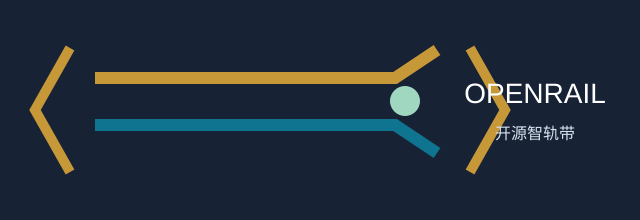
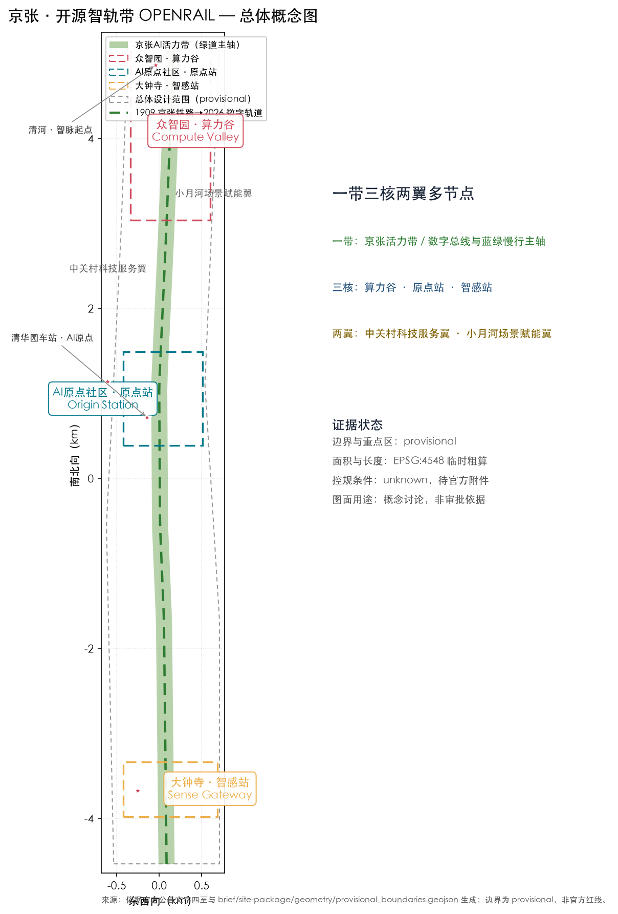
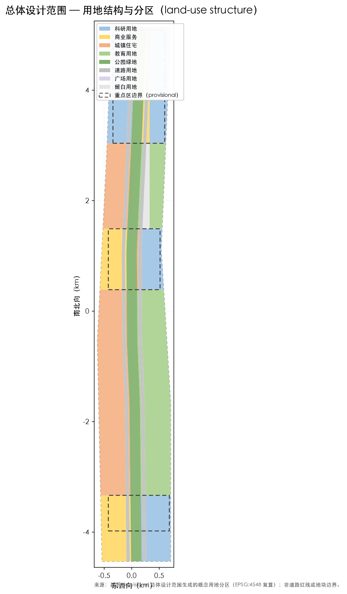
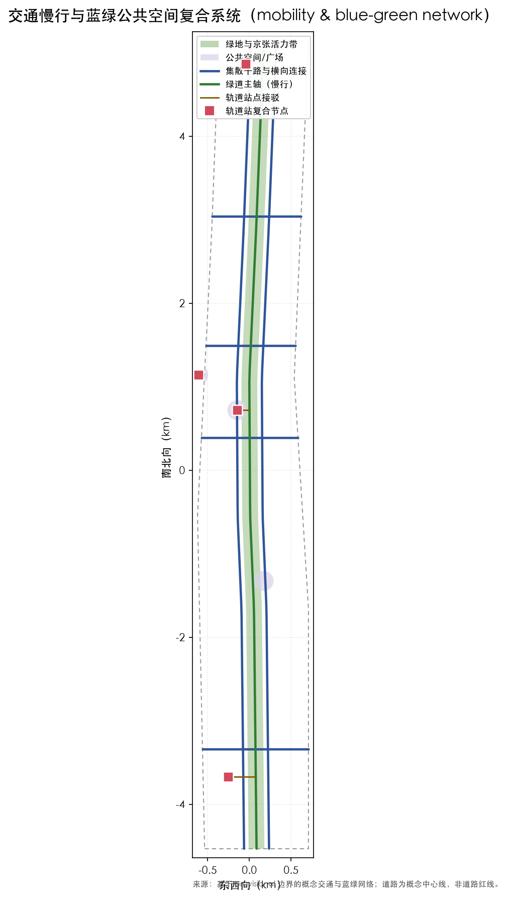
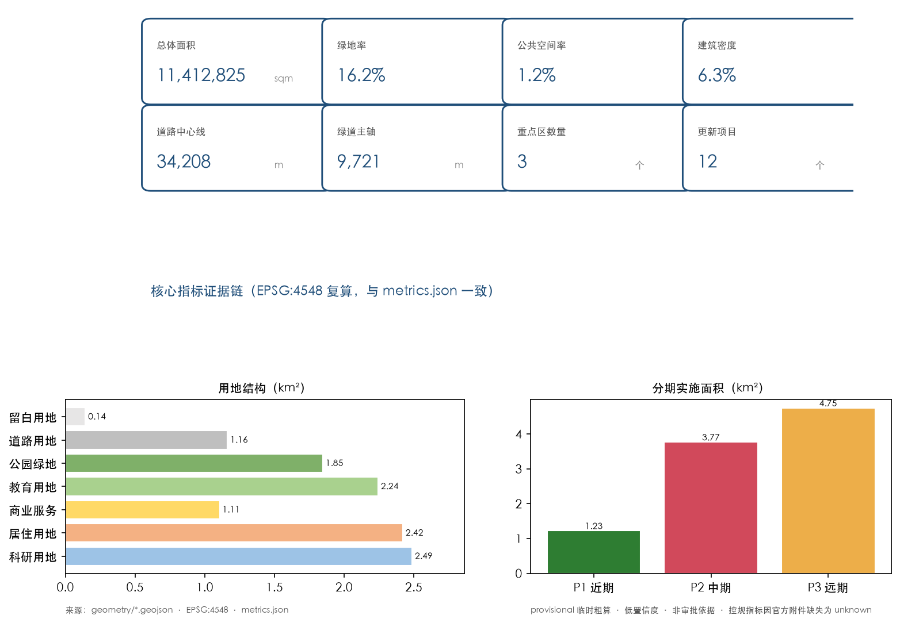

众智园·算力谷
- 花园型自主创新街区：国家平台、产业展示、清河文化、对外交通与低碳交往空间。
以京张铁路遗址公园为城市级AI总线（OPENRAIL），将铁轨转译为数字轨道、车站转译为算力与社区复合节点、 三处重点区转译为三个可进化的AI试验场，形成一带三核两翼多节点的开源智轨城市结构。本页为离线电子展示，权威数据仍以 GeoJSON、metrics.json、矩阵与自检结果为准。
OPENRAIL 标识、色板、最小尺寸与错误用法。图形与文字均为本包原创概念。

双轨、代码括号和节点圆点构成概念标识；1909 - 2026 - infinity 作为时间线母题。
最小宽度：印刷 24 mm / 屏幕 120 px。禁止拉伸、旋转、低对比改色、拆分轨道或与未授权商标并置。
总体空间结构：一带三核两翼多节点，服务百年京张文化带、都市AI生活体验带与AI融合创新带三大定位。

land_use.geojson 在总体设计范围内全覆盖分区，无缝隙无重叠，用地代码符合 land_use_codes 枚举。

案例机制、空间落点、最小行动和与北纬社区、未来/怀柔科学城、经开区及京津冀的建议接口。
| 机制 | 空间落点 | 最小行动 | 边界 |
|---|---|---|---|
| 高校策源 | 原点站共研空间 | 小型公开工作坊 | 不接入科研内部数据 |
| 开源协作 | 算力谷服务台 | 资源预约与贡献展示 | 用途、版本和责任登记 |
| 成果转化 | 中关村服务翼 | 校企会客与路演 | 不作资金或入驻承诺 |
| 公共体验 | 绿道、客厅、智感广场 | 人工讲解和低门槛体验 | 不以智能手机为必要条件 |
| 国际传播 | 开放成果展与活动路线 | 中英文主题模板 | 内容须署名与授权 |
北纬社区：社区客厅与热线；未来/怀柔科学城：研发与科普工作坊；经开区：低速配送经验交流；京津冀：标准、人才和文旅案例库。均为建议接口，不代表机构承诺。
案例机制为公开概括，区域合作须另行取得授权、数据和安全核验，不将任何组织或项目表述为已签约。
众智园、AI原点社区、大钟寺分别给出定位、空间结构、更新动作、交通接口与实施风险。
干路骨架、轨道站复合节点、绿道慢行主轴与蓝绿公共空间组件库。

全部面积与比例指标在 EPSG:4548 下从 geometry 复算，与 metrics.json 一致。

12 张场景卡逐项呈现空间、最小数据、人工复核与停止条件；带 * 为产业测试。
算力谷服务台
匿名时段/负载
管理员核验；超负载暂停治理实验室
公开或合成数据
双人批准；泄露/偏差即停清河门户
聚合能耗与队列
值班员校验；延迟降级绿道与站点
公开道路/人工计数
工程师复核；冲突率超限停推送社区客厅
公开机构信息
不作诊断；转人工热线遗址步道
审核展签与讲解稿
馆员校订；存疑标注待核验原点站研讨区
公开课程/自愿作品
教师审阅；未成年人线下监护公共服务台
公开法规索引
非法律意见；复杂案转窗口客厅与站点
公开设施/纸质指引
人工巡检；离线启用纸图电话大钟寺试验街区
匿名安全事件
安全员接管；越界/故障即停广场与绿道
匿名设施缺陷单
人工确认派单；投诉超限暂停智感站
商户自愿公开信息
商户确认；无授权不显示实时项场景申请、权限、模型责任、审计、申诉、失败降级和公平性测试的统一协议。
每个场景登记目的、数据类别、保留期限、模型版本、责任人、无障碍替代与停止条件。默认不采集身份、精确轨迹、面部或非公开空间数据。
运营方记录运行，发起方负责模型质量，公共窗口受理人工复核和申诉；任何影响公共服务的输出均不直接替代人工决定。
季度发布匿名审计摘要。数据质量不足、模型不可用、安全事件或公平性测试失败时，自动降级为规则提示、纸质信息或人工服务。
老年、儿童、残障、低数字技能、无智能终端与外来务工人群的空间、信息和申诉措施。
| 对象 | 空间与信息措施 | 非数字替代 | 参与/申诉 |
|---|---|---|---|
| 老年人与低数字技能者 | 低位信息、座椅、遮荫、清晰照明 | 电话、纸图、人工台 | 社区走读与热线 |
| 儿童与照护者 | 连续无障碍路径、可见等候区 | 线下讲解和活动监护 | 监护人反馈与快速整改 |
| 残障人士 | 连续通行、触觉/图形提示、无障碍卫生间待核验 | 人工引导 | 无障碍审查与复核 |
| 无智能终端/外来务工人员 | 多语言图形导视、公共服务点 | 纸质办事和活动信息 | 匿名意见箱和窗口申诉 |
12 个项目的责任角色、前置核验、指标、停止条件、分期门槛和年度活动。
| 阶段 | 年度活动与维护 | 协作角色 | 门槛 |
|---|---|---|---|
| P1 | 开源智轨周、社区走读、两张场景卡 | 社区、公共窗口、专业人员 | 许可、无障碍与人工服务到位 |
| P2 | 治理实验室、站城体验、三项测试场景 | 场地管理方、运营方、法务与安全员 | 责任书、能耗/安全核验、审计通过 |
| P3 | 区域案例交流、维护基金与年度评估 | 跨区域合作方与社区代表 | 官方边界/控规/权属资料补齐 |
铁路记忆路线、节点编码、双语传播模板与版权署名要求。
CV-01 算力谷、OS-01 原点站、SG-01 智感站；导视采用颜色、形状和文字三重编码，避免只依赖颜色。
OPENRAIL AI BELT / 京张·开源智轨带。所有案例、图片、字体、代码和第三方标识按版权台账署名；无证据的素材不发布。
compliance_matrix.json 覆盖公告 1.3、1.4、1.5 与 agent.1-agent.6；standard_matrix.json 覆盖六项标准；design_depth_matrix.json 覆盖 15 项设计深度。
来源见 sources.json、agent_taskbook.json 与 brief/site-package/。本页不加载 CDN、远程地图瓦片、外部脚本或字体。
待补控规、道路红线、权属、市政、文保与工程条件在 assumptions.json 中列明并标注 provisional。
三层范围、用地分区、交通慢行、蓝绿公共空间、建筑与更新项目、AI 场景、核心指标、来源与假设在本页全面呈现；自检状态与自检结果如下。
统筹研究范围（约43.6km²）、总体设计范围（约11.4km²）、重点区域范围（约368.4ha）三级递进。
12个概念更新项目，按 P1/P2/P3 三期实施，见 phasing.geojson 与 proposal.md。
官方公告、任务书、brief/site-package 与 geometry 均为公开/清权来源。
控规、道路红线、权属、市政、文保与工程条件待补，全部以 provisional 处理。
deterministic validation、spatial review、visual packaging check 与 professional evidence review 必须全部通过。当前边界为 provisional，PASS intake 后需以官方 polygon 重算全部图层、指标、图纸与可视化。